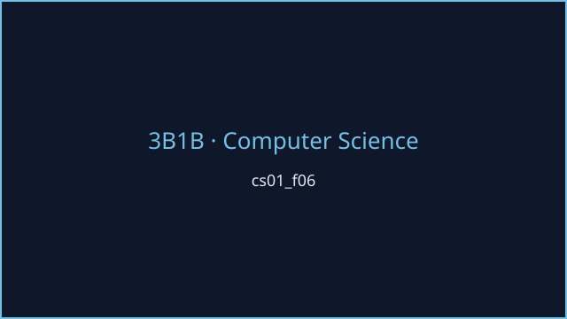

আমরা প্রতিদিন বিশাল পরিমাণ পাঠ্য লেখি, পড়ি ও পাঠাই। স্বাভাবিক প্রশ্ন হলো—এই পাঠ্যকে কতটা ছোট করা যায়, তার সীমা কোথায়? একটি ভাষার ''মৌলিক সংকোচনযোগ্যতা'' বোঝা মানে বোঝা যে ভাষাটি আসলে কত তথ্য বহন করছে।
ধরা যাক একটি বর্ণমালায় ২৬টি অক্ষর সমান সম্ভাবনায় এসেছে। তাহলে প্রতিটি অক্ষর ঠিক কত বিট দিয়ে লেখা যাবে? এই প্রশ্নের উত্তরই আমাদের এন্ট্রপির দিকে নিয়ে যায়।
যে ঘটনা যত কম সম্ভাবনা, সেটি ঘটলে তত বেশি ''আশ্চর্য'' তৈরি হয়—আর সেই আশ্চর্যের পরিমাণই হলো তথ্যের একক।
বিজ্ঞানী শ্যানন লক্ষ করেছিলেন যে তথ্যের পরিমাপ করা যায় ``বিস্ময়'' (surprise) হিসেবে। যদি কোনো বার্তা আগে থেকেই জানা থাকে, সেটি নতুন কোনো তথ্য দেয় না—বিস্ময় শূন্য। কিন্তু কিছু অপ্রত্যাশিত ঘটনা আমাদের অনেক বেশি তথ্য দেয়।
এখানে $p(x)$ হলো ঘটনাটির সম্ভাবনা। লগারিদম ভিত্তি ২ ব্যবহার করায় তথ্যের একক হয় ''বিট''। সম্ভাবনা যদি অর্ধেক হয়, বিস্ময় হয় ১ বিট; সম্ভাবনা যদি এক-অষ্টম হয়, বিস্ময় হয় ৩ বিট।
একটি সম্পূর্ণ বার্তার প্রতিটি প্রতীকের বিস্ময় আলাদা। কতটা তথ্য গড়ে পাই? এর জন্য আমরা সম্ভাবনা দ্বারা ওজন করা বিস্ময়ের গড় নিই—এটিই হলো এন্ট্রপি।
সমান সম্ভাবনার $n$টি প্রতীকের ক্ষেত্রে এন্ট্রপি সর্বোচ্চ এবং সমান $\log_2 n$ বিট। কোনো একটি প্রতীকের সম্ভাবনা ১ হলে এন্ট্রপি শূন্য—কারণ তখন কোনো অনিশ্চিততা থাকে না।
এন্ট্রপি মানেই ''অনিশ্চিততার পরিমাণ'' বা ''গড় বিস্ময়''। একে প্রায়শই $H$ দিয়ে লেখা হয়।
ইংরেজি ভাষায় অক্ষরগুলোর সম্ভাবনা সমান নয়—'e' খুব সাধারণ, 'z' বিরল। আবার পরের অক্ষরটি আগের অক্ষরের ওপর নির্ভর করে। তাই একটি ভাষার প্রকৃত এন্ট্রপি ৪.৭ বিটের মতো, যা ২৬টি অক্ষরের সর্বোচ্চ $\log_2 26 \approx 4.7$ বিটের কাছাকাছি।
এখানে মূল ধারণা হলো—একটি ভালো ভাষা মডেল পরবর্তী প্রতীকের সম্ভাবনা যত নিখুঁতভাবে অনুমান করতে পারে, সংকোচন তত বেশি করা যায়। তথ্য তত্ত্ব ও মডেলিং একই মুদ্রার দুই পিঠ।
এন্ট্রপি কেবল সংকোচন নয়—এটি অনুমান, মেশিন লার্নিং ও কোয়ান্টাম তত্ত্বতেও একই ভূমিকা পালন করে।
এই ধারাবাহিকতার মূল বক্তব্য হলো—কোনো কিছু ভালোভাবে সংকুচিত করতে পারা মানে সেটি সম্পর্কে ভালোভাবে বুঝতে পারা। যে মডেল ভাষার প্যাটার্ন বেশি বোঝে, সে কম বিটে বেশি তথ্য ধরে রাখতে পারে।
পরবর্তী পাঠে আমরা দেখব—যখন আমাদের অনুমান ভুল হয়, তখন কত ''বাড়তি'' খরচ দিতে হয়। সেই খরচই হলো ক্রস-এন্ট্রপি।
নিচের ইন্টারেক্টিভ উপাদান ও কুইজের মাধ্যমে পাঠের ধারণা নিজে যাচাই করুন।
